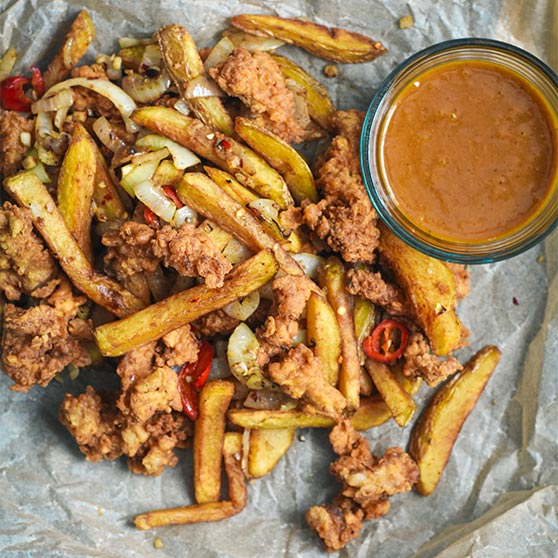

SpiceBag Recipe

Today, i'll be showing you how to create one of my favorite meals... A SpiceBag!
Ingridients
- 2 free-range chicken breasts (or chicken thighs), sliced in long thin strips
- 100ml buttermilk (or regular milk with 1 tsp fresh lemon juice)
- 3 tbsp plain flour
- 4 large chipping potatoes, peeled (we like Kerrs Pinks, Maris Pipers or Roosters)
- 1 red chilli, sliced (de-seeding optional for lower heat)
- 1 white onion, sliced in 2cm half moons
- 4 garlic cloves, fine chopped
- Vegetable Oil for frying
Steps
- First, prepare your chicken by steeping it in buttermilk for an hour to tenderise. In another bowl, add 2 tsp of the spice bag blend to the flour to season it.
- For truly crispy chips, it’s a three-step process, but worth it. Parboil the chips in boiling, salted water for two minutes to begin the cooking process as your oil gets to 170ºC. Drain the chips well and then fry for 4-5 minutes at this lower temperature to cook through, then remove. You don’t want a lot of colour, just a firm exterior (and they will be fluffy inside!) Then, just before serving, crank the heat up to 190ºC to fry for a further 90 seconds or so to get that gorgeous golden colour.
- For the chicken, you’re also going to fry at 170-180ºC for around five minutes. Take your chicken strips from the buttermilk (shaking off excess) and dunk into your seasoned flour to coat, then gently lower into the hot oil. You may need to do this in two batches. When golden brown and crisp, drain and remove to a wire rack over a baking sheet, lined with kitchen paper.
- For the flash-fried vegetables, heat a wok or frying pan to a high heat and add 1/2 tbsp of neutral oil. When the oil is hot, introduce the onions and keep moving, you want them to soften but not colour if you can help it. After a minute or so introduce the garlic and then just before you finish frying add in the sliced chilli. Remove from the heat.
- In a large mixing bowl, sprinkle 1 tbsp (or two if you like) over the chicken, chips and onion, garlic and chilli mix and toss everything together to combine. Optional to serve it with curry sauce alongside or not.